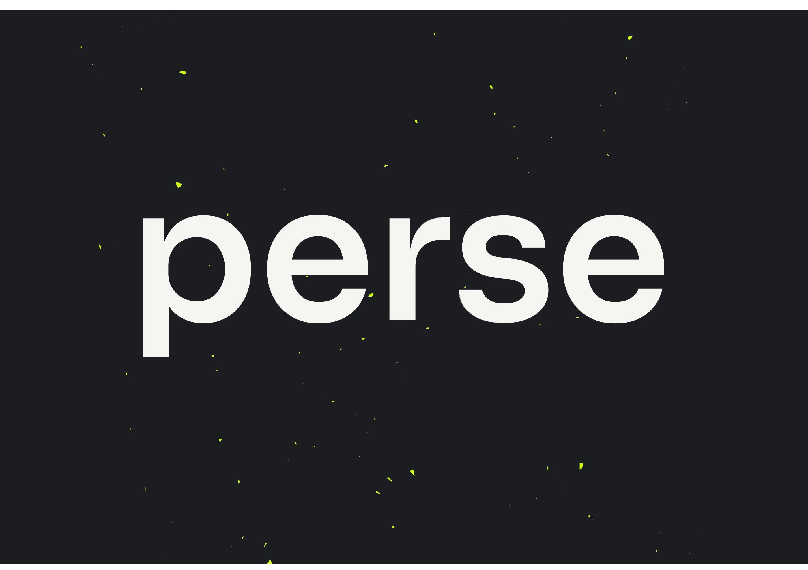
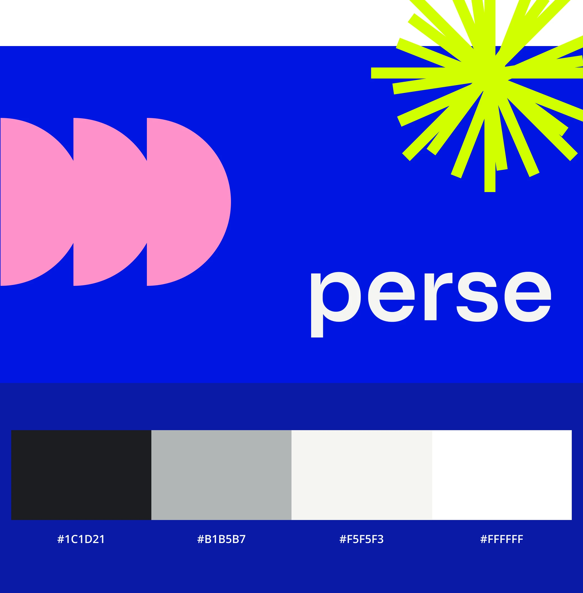
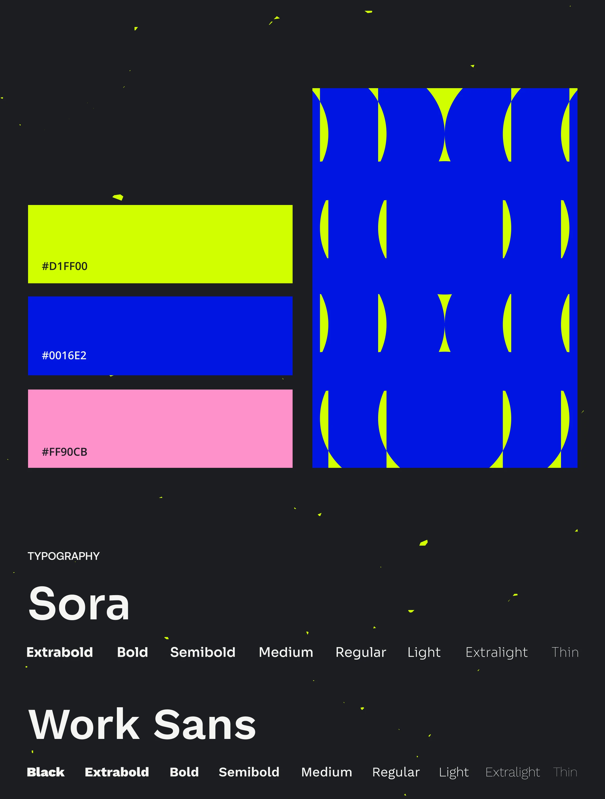
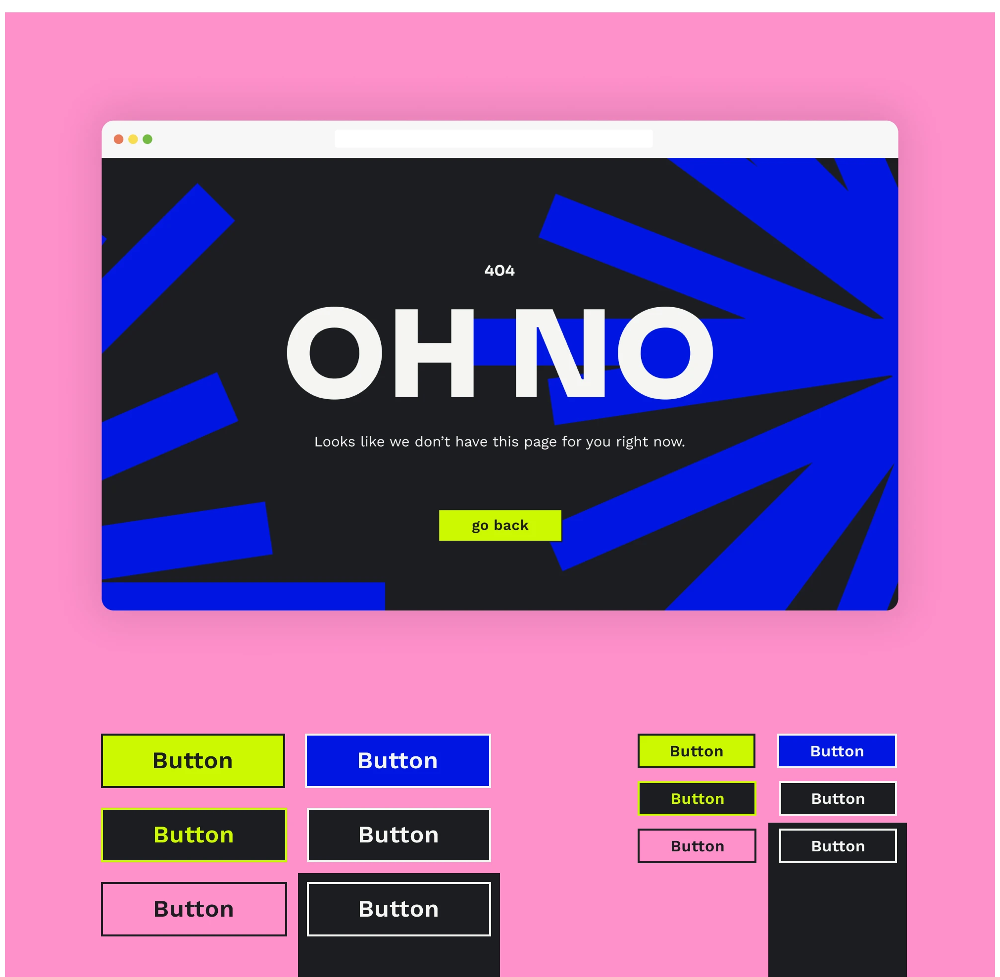
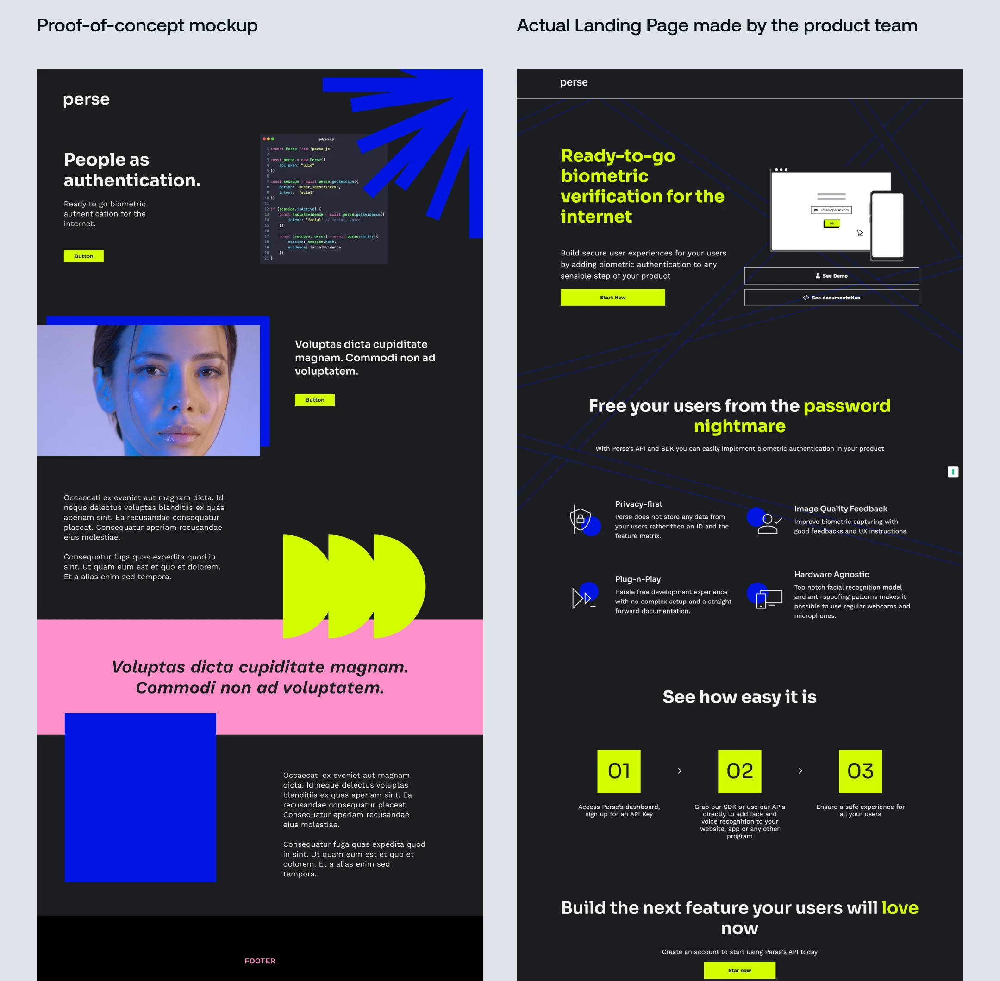
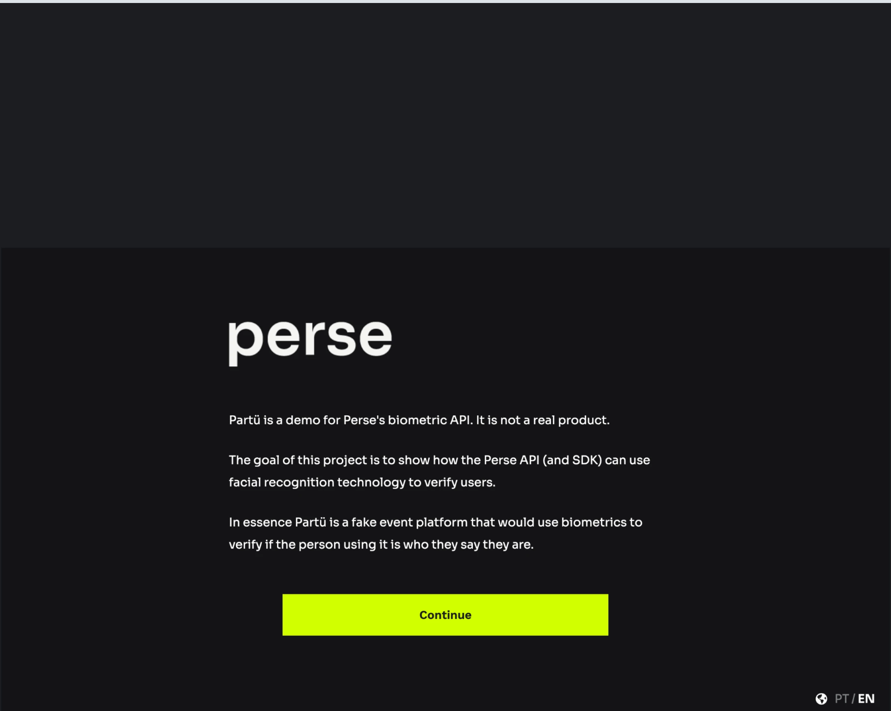

Rethinking authentication to end all passwords.
In 2021 CyberLabs group decided to create a new product to incorporate the efforts in AI, mainly speech synthesis and facial recognition, reminiscent from older and discontinued products.
This product was a biometric solution using speech and facial recognition to substitute the use of passwords in daily login access. I was tasked with the naming and branding.

Branding, naming, and visual identity.
Creative fields: Product Design and Branding.
Credit: Rafael Anhaia.
Biometric authentication ensures that all access is authorized access, made by the only person that should be logging into your accounts: yourself.
“Hackers don’t break in, they log in”
Bret Arsenault, Microsoft
We needed a name strong enough to clearly communicate the idea of protection beyond the use of passwords: those can be forgotten, or worse - known by others.
Dealing with biometric authentication, the idea was that the things that make you “you” are actually the very things able to protect your accounts and make them only accessible by you.
We want our users to be able to log into their accounts using only what makes them unique.
latim, per se
by, of, or in itself of oneself or themselves: as such:
por si só; em relação a si mesmo; de maneira intrínseca, ligada à própria pessoa; intrinsecamente, espontaneamente.
Symbolically, the name intends to explore the concept of “personhood intrinsic to the user” - since we are using biometric authentication, the relationship with access is based on the most basic notion of the user’s self: their looks, their voice, their marks, and quirks, their idiosyncrasies.
Conceptually, the idea of “by oneself” is basically what we are trying to achieve with this product: stop any unauthorized access by anyone else that is not you, that all login that the user performs is done by themselves.
Phonetically, we are taking advantage of the proximity that “Perse” has to “persona”.
Perse as a brand carries the CyberLabs DNA - bold, tech, and cool. But I was able to make this project a little more fun as well.
Our not-black black and warm gray pair really well with a bold choice of colors and a graphic family of statement elements.
With the landing and future use by the product team in mind, Perse’s visual identity is dark mode first and optimized for dark background and contrasting details.
However bold, the color palette complies with the AAA WCAG 2.1 accessibility standard on text + background, according to the Figma plugin A11Y.


Edges and strokes
Perse’s UI proposal is all right angles and sharp thin lines. As a branding exercise, I produced a mockup of what the landing page could look like.
Below is this exercise in landing next to the actual landing page made by the product team: Rafael Anhaia, Felipe de Araújo Silva, Ronalson Vargas, Luísa Moncorvo and Pedro Dornelles.


Proof-of-concept mockup, actual landing page and login page made by the product team.
Partü is a demo for Perse’s biometric API. It is not a real product.
The goal of this project is to show how the Perse API and SDK can use facial recognition technology to verify users.
In essence Partü is a fake event platform that would use biometrics to verify if the person using it is who they say they are.

Check out getperse.com to know more about the product.